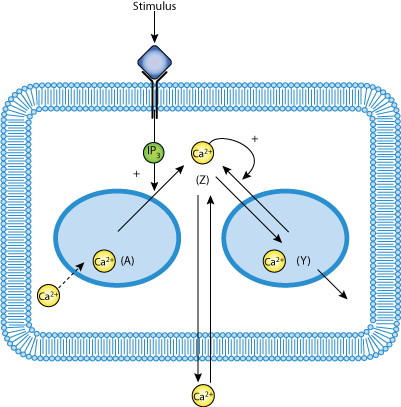

This CellML model will run in OpenCell and COR to reproduce published results
Oscillations in cytosolic Ca2+ develop in a variety of cells after an induction phase, called latency, the duration of which depends on the magnitude of external stimulation. Experiments in hepatocytes indicate that the period and latency of Ca2+ oscillations both decrease as the level of the stimulus increases. We analyze the correlation between period and latency in a model recently proposed for signal-induced Ca2+ oscillations. We show that the linear relationship between period and latency observed in the experiments arises naturally in this model as a result of the mechanism of Ca2(+)-induced Ca2+ release on which it is based.
The original paper reference is cited below:
'Latency correlates with period in a model for signal-induced Ca2+ oscillations based on Ca2+induced Ca2+ release', Dupont G, Berridge MJ, Goldbeter A., 1990 Cell Regulation, Vol 1, 853-861. PubMed ID: 2088529
|  |
| Schematic diagram depicting the Dupont Berridge Goldbeter 1990 model |